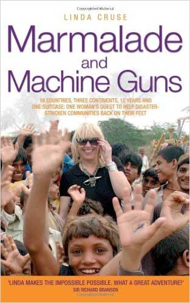

“Linda makes the impossible possible.”
~ Sir Richard Branson
Linda Cruse is an international aid worker, disaster management specialist, author, inspirational speaker, founder and creator of Be The Change Business Leaders on the Frontline, Race 4 Good and the Emergency Zen thought leadership series and social entrepreneur. In 2014 she was appointed a Senior Fellow Residence in the College of Business and Law at the University of Canterbury New Zealand.
Her 17 years of frontline humanitarian aid work has taken her to every continent in the world where she has assisted in some of the world’s most catastrophic natural disasters such as the Asian tsunami, the Pakistani earthquake, two Philippine super-typhoons and currently the aftermath of the Nepal earthquake,, conflict zones, high mountain nomadic areas and refugee camps, as well as aiding challenged communities worldwide.
Described as a cross between Florence Nightingale and Indiana Jones, Linda Cruse is the ultimate humanitarian aid worker intent on changing the world forever.
Linda, a stressed-out mum working in a job she hated, was driving along a motorway in the middle of the night when she suffered temporary blindness. This terrifying episode led to a blinding insight: what is the point of living if life has no point? Determined to make a difference, Linda started a new life as a frontline humanitarian aid worker.
Linda has fused her passion for adventure, an explorer’s spirit and a deep desire to make a difference to remote communities. Her trademark is her ability to broker powerful partnerships between the private sector and communities worldwide devastated by catastrophic disasters or in challenged environments. To enable her to do this she launched a unique concept, aptly named Be the Change. Linda challenges business leaders to be a catalyst for change with great success. Be The Change uses the entrepreneurial skills and acumen of business leaders to assist in solving some of the world’s intractable problems.
Cruse’s area of expertise lies in bridging the gap between private and public sectors and creating health, education and business development to generate innovative opportunities for sustainable employment, income generation and value add.
Linda has faced death on more than one occasion but she has never given up on her mission. Her ultimate aim is to inspire others to do what they can. Linda calls it the “Power of One”.
Linda’s book “Marmalade and Machine Guns” 16 countries, 3 continents, 12 years and one suitcase, one woman’s quest to help disaster-stricken communities back on their feet”, follows her outstanding work and the adventures.
Endorsed by Sir Richard Branson; “Linda makes the impossible, possible.”
Linda has worked side by side with some of the worlds’ most influential figures including HH The Dalai Lama, HRH Prince Charles and Sir Richard Branson and companies including Nestle, Cadburys, Thai Beverage, KPMG, Manpower, Merrill Lynch, Deloitte, GSK, Continental Airlines, Wyeth, Abbott, Allied Dunbar and Hasbro. Linda has also worked alongside foundations such as The Prince of Wales International Business Leaders Forum, United Nations High Commission for Refugees, Virgin Unite, the World Bank and numerous local grass roots NGOs.
Linda lectures and teaches worldwide. She is a compelling and inspirational speaker with a unique understanding of motivation, global cultures, leadership and community building.
Linda is also a qualified nurse and magician!